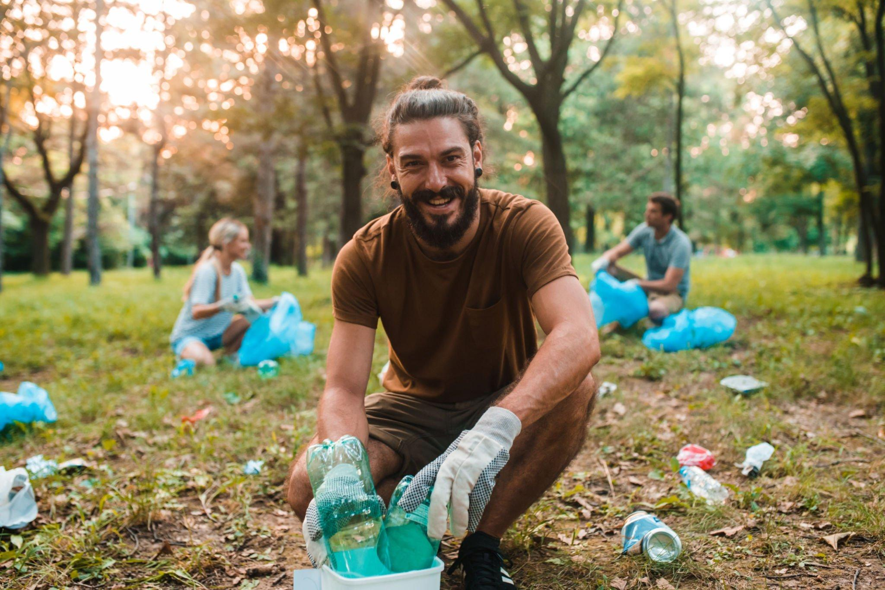

أحمد محمود
بدأت رحلتي في إعادة التدوير منذ خمس سنوات. كانت البداية صعبة، لكن مع الوقت أصبحت هذه العادة جزءًا من حياتي اليومية. أشعر بالفخر كلما رأيت النتائج الإيجابية على بيئتنا.
بدأت رحلتي في إعادة التدوير منذ خمس سنوات. كانت البداية صعبة، لكن مع الوقت أصبحت هذه العادة جزءًا من حياتي اليومية. أشعر بالفخر كلما رأيت النتائج الإيجابية على بيئتنا.
لطالما كنت أبحث عن طرق للمساهمة في حماية البيئة. عندما تعرفت على فكرة إعادة التدوير، قررت أن أجعل من منزلي نموذجًا للحفاظ على البيئة. اليوم، أشارك جيراني وأصدقائي هذه الخبرة.
كانت أول خطوة لي في عالم إعادة التدوير هي جمع الزجاجات البلاستيكية. الآن، أدير مشروعًا صغيرًا لجمع النفايات وإعادة تدويرها. أشجع الجميع على المشاركة في هذه المبادرة.